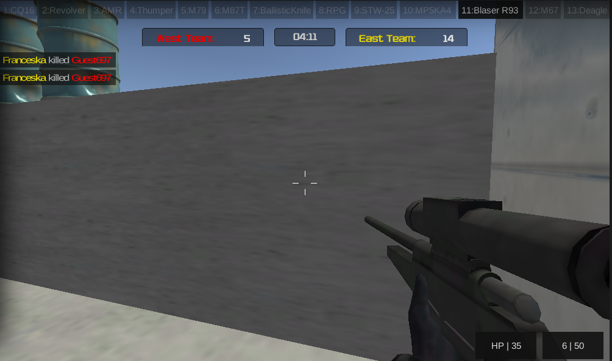

Progress Tracker
2018 March 01
- Initially I used to run inorder to develop my stamina and lose weight so that I won't feel much lazy but later I realized since I am spending an hour daily in this why can't I make this also a part of exploration I want to raise my bar. Previously I used to run about 8-9 rounds slowly I should say it is somewhat like jogging, but recently I want to give my best in everything I do since I am dedicating 1 hour daily why can't I progress in this. I decided to increase my speed and reduce the distance to 5 rounds. I started initially it used to take me like 12min:28sec some where around that point slowly in five four days I could pick up my speed to 11min:48sec. Yes it really feels great because you know your pace and I never used to understand why is it so hard to increase ones speed by 30s afterall why cant they give their 100% here comes the catch, The essential part of raising your speed is not physical it is in the proportion of 90 mental and 10 physical. Yes you need to focus on the foot steps train to maintain your pace and simultaneously conserve your energy till the end since it is a marathon kind of thing your just can't make a sprint. If you focus on some thoughts during running which I used to do before, I used to run so that I can think quitely and seggregate my thoughts well but later I understood everything is just the same when you try to focus on the physics of running like controlling your pace just like a feedback control system sending realtime signal feedback to your mind and giving back the necessary action in order to maintain the speed constant. Slowly I got the trick of runnig I made it to 10min:48sec I was on cloud8 and I could really sense its all about control just dont give a chance to think about anything else just your goal should keep on projecting every second in your brain. Today is the day literally I was just thinking about 5 rounds & 5 rounds & 5 rounds .. all the time. When I get to think about either Dabba or someone no no my brain just flashes light its 5 rounds you bugger just runnnn. So today I made it to 10min:02sec. I just want to reflect the same thing in my work too everything is the same just remember your karma. Evrything else follows. Thank You its a great day overall. Something to laugh I am sensing a growth in height which is really awkward actually at the age of 22.
2018 March 04
- Today I was depressed completely due to some personal reasons and was running in loops all day long but was also simultaneously playing Pacogmaes - War of Soldiers it makes me feel relaxed, it is a lighter version of Counter-Strike community game where people create rooms and usually rooms(groups) ranging from 4-12/16 play. I like to snipe and numerous incidents have created an image in mind that I am some what good at aiming things(I can't justify about this in my life here I mean in games). Usually I try to pick the side which has lesser score and try to aim on the high-scorer of the oponent team and I play till the guy quits the game. I might seem like a psychopath haha no its just that I can think parallely in the same rhythm I play. Most of the time I succeed in making the oponent quit the game but sometimes well experienced players show up which doesn't satisy my purpose to release my stress. One among those guys was WILSON. I should say he is the best I have seen in this game and I was hoping probably I would reach his level in some 6 months or so but to my shock I actually did make him quit and I was performing almost like him. I shouldn't say that he got scared but definetely he was shocked because it never happens to him. He was supposed to be "The Toughest" and this just covered up all of my depression. I learned something which I want to remind myself everyday. "Don't just think everything should happen in a single day, things do take time our duty is to just keep fighting. No matter what just keep fighting." To be frank I actually didn't intend to surpass him it just happend. I am sure now I can completely face him with no hesitation. It is such a wonderful learning which made me really happy. Yes winning will make you easily stick to goals but at the same time you should also be able to accept the loss and gather courage to fight again to win. I didn't knew this and was fiddling like a daffar all my life.Accept the loss with smile, enjoy the win gently & remember your duties. Neither win/loss shouldn't define us. We are what we are.

2018 March 04
- Today I was depressed completely due to some personal reasons and was running in loops all day long but was also simultaneously playing Pacogmaes - War of Soldiers it makes me feel relaxed, it is a lighter version of Counter-Strike community game where people create rooms and usually rooms(groups) ranging from 4-12/16 play. I like to snipe and numerous incidents have created an image in mind that I am some what good at aiming things(I can't justify about this in my life here I mean in games). Usually I try to pick the side which has lesser score and try to aim on the high-scorer of the oponent team and I play till the guy quits the game. I might seem like a psychopath haha no its just that I can think parallely in the same rhythm I play. Most of the time I succeed in making the oponent quit the game but sometimes well experienced players show up which doesn't satisy my purpose to release my stress. One among those guys was WILSON. I should say he is the best I have seen in this game and I was hoping probably I would reach his level in some 6 months or so but to my shock I actually did make him quit and I was performing almost like him. I shouldn't say that he got scared but definetely he was shocked because it never happens to him. He was supposed to be "The Toughest" and this just covered up all of my depression. I learned something which I want to remind myself everyday. "Don't just think everything should happen in a single day, things do take time our duty is to just keep fighting. No matter what just keep fighting." To be frank I actually didn't intend to surpass him it just happend. I am sure now I can completely face him with no hesitation. It is such a wonderful learning which made me really happy. Yes winning will make you easily stick to goals but at the same time you should also be able to accept the loss and gather courage to fight again to win. I didn't knew this and was fiddling like a daffar all my life.Accept the loss with smile, enjoy the win gently & remember your duties. Neither win/loss shouldn't define us. We are what we are.
Comments
Comments powered by Disqus